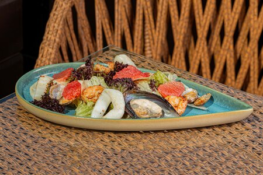
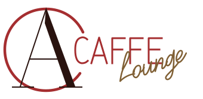
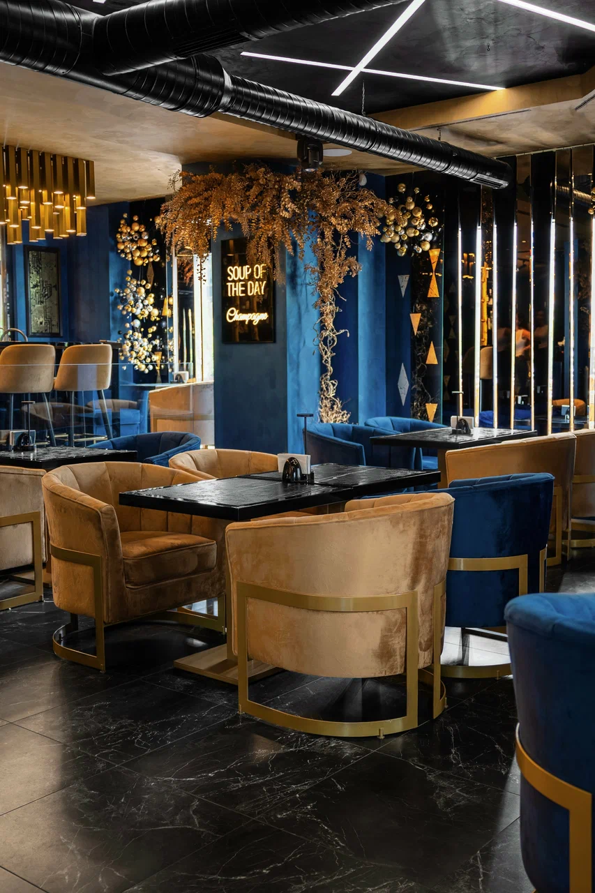
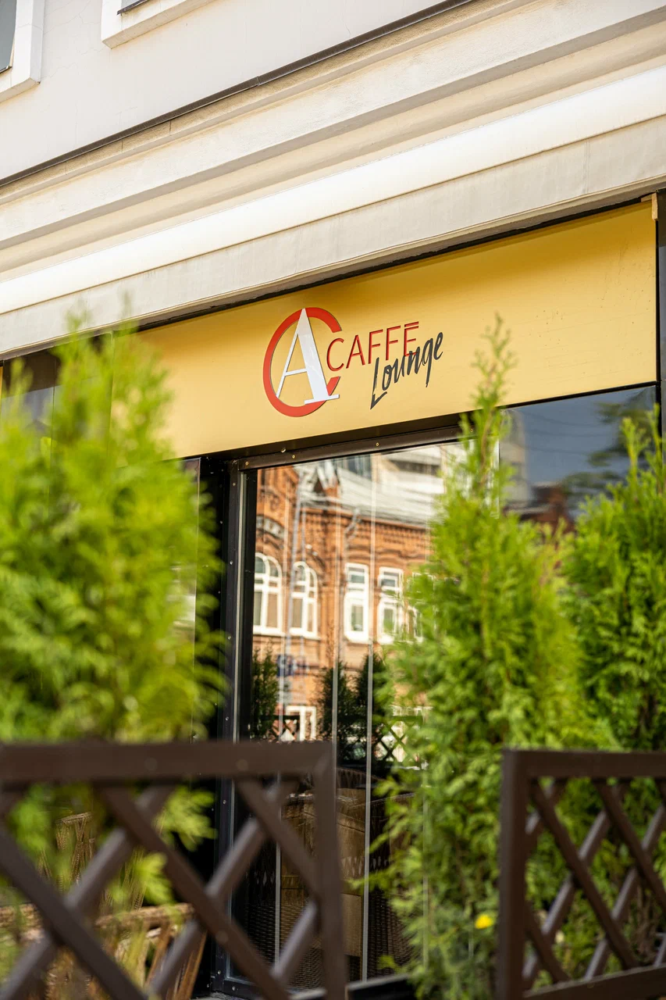

Салат с морепродуктами и соусом понзу
Морепродукты и соус понзу.
240 г790 ₽

+7 (951) 930-88-31 Забронировать стол
Ресторан · Пермь
Ресторан и лаунж-бар в центре Перми.
Европейская и японская кухня — для обеда,
ужина и встреч с близкими.
Бронирование по телефону
Пн–Чт, Вс 12:00–01:00 Пт–Сб 12:00–02:00
03 / О ресторане
Acaffe Lounge — ресторан и лаунж-бар в центре Перми, где за одним столом встречаются европейская и японская кухня.
Приходите на обед, собирайтесь за ужином и проводите время с теми, кто вам дорог. Начните с закусок, выберите горячее и оставьте место для десерта — пусть у встречи будет свой вкус.
Увидимся на Газеты Звезда, 24
04 / Бронирование
Позвоните в Acaffe Lounge, чтобы обсудить время встречи и забронировать стол.
Позвонить для бронирования +7 (951) 930-88-31Собирайте тех,
с кем хорошо.
В ресторане предусмотрен банкетный зал. Вместимость и условия вашего события уточните по телефону.
Обсудить встречу ↗В карточке ресторана указаны еда навынос и доставка. Доступность, меню и условия уточните у команды.
Уточнить по телефону ↗| Понедельник | 12:00–01:00 |
|---|---|
| Вторник | 12:00–01:00 |
| Среда | 12:00–01:00 |
| Четверг | 12:00–01:00 |
| Пятница | 12:00–02:00 |
| Суббота | 12:00–02:00 |
| Воскресенье | 12:00–01:00 |